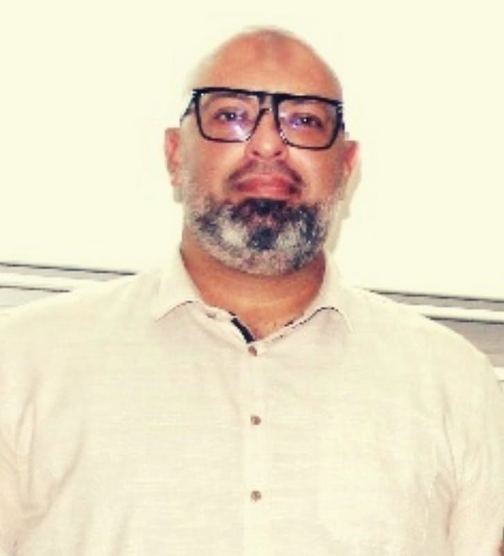

Honorary General Chairs
Pr. M. IJJAALI
President of the University Sidi Mohamed Ben Abdellah
Pr. H. TABYAOUI
Dean of the Polydisciplinary Faculty of Taza
General Chairs
Y. Ben-Ali
FP-Taza, Morocco
Z. Rahou
FP-Taza, Morocco
Program Co-Chairs
A. Essahlaoui
FP-Taza, Morocco
J. Barkani
FP-Nador, Morocco
M. Ouriagli
FP-Taza, Morocco

A. Sallem
Higher Institute of Industrial Managment (ISGI) of Sfax, Tunisia
Organizing Committees
- Ahaitouf Abdelaziz, FP Taza, USMBA, Morocco
- Essahlaoui Abdelouhed, FP Taza, USMBA, Morocco
- Ouriagli Mohammed , FP Taza, USMBA, Morocco
- Hallaoui Abdelaziz, FP Taza, USMBA, Morocco
- Labzour Asmae, FP Taza, USMBA, Morocco
- Lberni Abdelaziz, FP Taza, USMBA, Morocco
- Belghiti Moulay Driss, FP Taza, USMBA, Morocco
- Achemlal Driss, FP Taza, USMBA, Morocco
- Alaoui Souad, FP Taza, USMBA, Morocco
- Benyakhlef Majid, FP Taza, USMBA, Morocco
- Bougteb Yahya, FP Taza, USMBA, Morocco
- Bouhadda Mohmmed, FP Taza, USMBA, Morocco
- Boushaba Hassane, FP Taza, USMBA, Morocco
- El affar Anass, FP Taza, USMBA, Morocco
- El hazzat Soleiman, FP Taza, USMBA, Morocco
- El kadri elyamani Nasserdine, FP Taza, USMBA, Morocco
- El kasri Chakir, FP Taza, USMBA, Morocco
- El ouaazizi Soumia, FP Taza, USMBA, Morocco
- Khamjane Aziz, FP Taza, USMBA, Morocco
- Khattari Youness, FP Taza, USMBA, Morocco
- Nemiche Mohammed, FP Taza, USMBA, Morocco
- Omara Hicham, FP Taza, USMBA, Morocco
- Tadist Khawla, FP Taza, USMBA, Morocco
- Tazi El Bachir, FP Taza, USMBA, Morocco
- Abdi Farid, FST Fes, USMBA, Morocco
- Ahaitouf Ali, ENS Fes,USMBA, Morocco
- El Kadmiri Ilyass, ENS Fes,USMBA, Morocco
- Abarkan Mustapha, FS Meknes, UMI, Morocco
- Barkani Jamal, FP Nador, UMP, Morocco
- Bouroumane Farida, FP Nador, UMP, Morocco
- Boussetta Reda, FST Al Hoceima, UAE, Morocco
- Bria Driss, FS Oujda,UMP, Morocco
- El Moussaouy Abdelaziz, CRMEF Oujda, Morocco
- El Youssoufi Omar, CNRST, Morocco
- Essaoudi Hafida , CRMEF Taza, Morocco
- Ezzarfi Abdelouhid, ISPITS, Rabat, Morocco
- Khaled Aissam, ENSA Al Hoceima, UAE, Morocco
- Mommadi Omar, ESEFA Agadir, UIZ, Morocco
- Zine El Abidine Myriem, ISPITS, Rabat, Morocco
Scientific Committees
- Ahaitouf Abdelaziz, FP Taza, USMBA, Morocco
- Essahlaoui Abdelouhed, FP Taza, USMBA, Morocco
- Ouriagli Mohammed, FP Taza, USMBA, Morocco
- Hallaoui Abdelaziz, FP Taza, USMBA, Morocco
- Lberni Abdelaziz, FP Taza, USMBA, Morocco
- Belghiti Moulay Driss, FP Taza, USMBA, Morocco
- Labzour Asmae, FP Taza, USMBA, Morocco
- Achemlal Driss, FP Taza, USMBA, Morocco
- Alaoui Souad, FP Taza, USMBA, Morocco
- Bougteb Yahya, FP Taza, USMBA, Morocco
- Benyakhlef Majid, FP Taza, USMBA, Morocco
- Bouhadda Mohmmed, FP Taza, USMBA, Morocco
- Boushaba Hassane, FP Taza, USMBA, Morocco
- El affar Anass, FP Taza, USMBA, Morocco
- El hazzat Soleiman, FP Taza, USMBA, Morocco
- El kadri elyamani Nasserdine, FP Taza, USMBA, Morocco
- El kasri Chakir, FP Taza, USMBA, Morocco
- El ouaazizi Soumia, FP Taza, USMBA, Morocco
- Khamjane Aziz, FP Taza, USMBA, Morocco
- Khattari Youness, FP Taza, USMBA, Morocco
- Nemiche Mohammed, FP Taza, USMBA, Morocco
- Omara Hicham, FP Taza, USMBA, Morocco
- Tadist Khawla, FP Taza, USMBA, Morocco
- Tazi El Bachir, FP Taza, USMBA, Morocco
- Abdi Farid, FST Fes, USMBA, Morocco
- Ahaitouf Ali, ENS Fes, USMBA, Morocco
- El Kadmiri Ilyass, ENS Fes, USMBA, Morocco
- Abarkan Mustapha, FS Meknes, UMI, Morocco
- Akharraz Ismail, FS Agadir,UIZ, Morocco
- Bahia Driss, FS Oujda,UMP, Morocco
- Barkani Jamal, FP Nador, UMP, Morocco
- Bilil Hasnae, ENS Fes, USMBA, Morocco
- Bouabdalli El Mahdi, ENS Fes, USMBA, Morocco
- Bouroumane Farida, FP Nador, UMP, Morocco
- Bria Driss, FS Oujda,UMP, Morocco
- El Allali Zakarea, FS Oujda,UMP, Morocco
- EL KHADIRI Karim, ENS Fes, USMBA, Morocco
- El Moussaouy Abdelaziz, CRMEF Oujda, Morocco
- Errouas Youness, ENSA Khouribga, USMS, Morocco
- Essaoudi Hafida , CRMEF Taza, Morocco
- Essaoudi Ismail, FS Meknes, UMI, Morocco
- Ezzarfi Abdelouhid, ISPITS, Rabat, Morocco
- Falyouni Farid, FS Oujda, UMP, Morocco
- Hajji Bekkay, ENSA Oujda, UMP, Morocco
- Hamidi Mohammed, FP Nador, UMP, Morocco
- Kerzazi Noureddin, ENSIAS Rabat, UM5, Morocco
- Khalid Aissam, ENSA Al Hoceima, UAE, Morocco
- Koumir Miloud, ENS Fes, USMBA, Morocco
- Laamari Yassine, ENS Fes, USMBA, Morocco
- Mommadi Omar, ESEFA Agadir, UIZ, Morocco
- Ouariach Abdelaziz, FS Oujda, UMP, Morocco
- Zine El Abidine Myriem, ISPITS, Rabat, Morocco
- Abohassan Khedr, Dhofar University, Oman
- Alsewari AbdulRahman, Birmingham City University, Royaume-Uni
- Carlos Humberto O. Costa, Federal University of Ceara, Brazil
- Duque Carlos , Surcolombiana university, Colombie
- Ech Cherif El Kettani Mounsif, Université Le Havre Normandie, France
- Maréchal Pierre, Université Le Havre Normandie, France
- Mora-Ramos Miguel, Universidad Autónoma del Estado, Méxique
- Penneck Yan, UST, Lile, France
- Sallem Amin, National Engineering School, Tunisie
- Segovia-Chaves Francis, Universidad Surcolombiana, Neiva, Colombie
- Tahiri Ahmed, ENS Fes, USMBA, Morocco
- Zaghdoudi Jihen, ISGI of Sfax, Tunisie
- Zaky Abd-Elslam Zaky, Beni Suef University, Egypte
Students Committee
- B. Mejmaa, LSI, FP-Taza, Morocco
- M. Htiti, LSI, FP-Taza, Morocco
- M. Lamrini, LSI, FP-Taza, Morocco